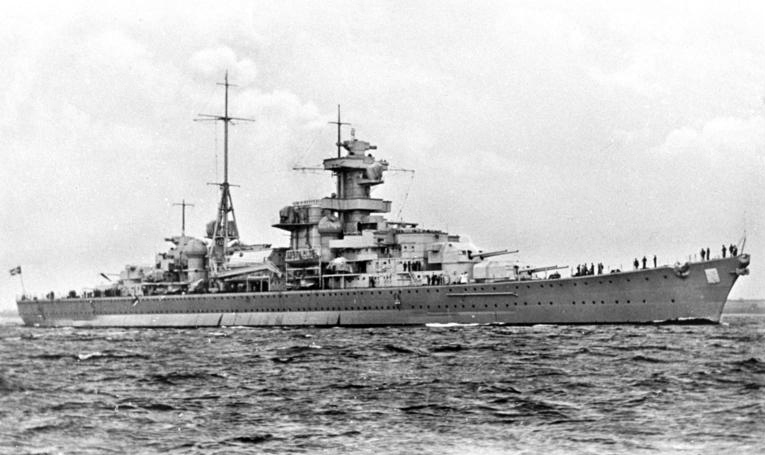
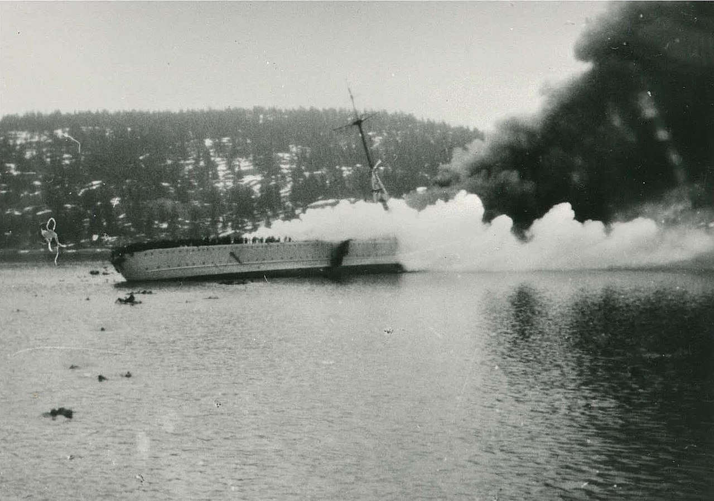
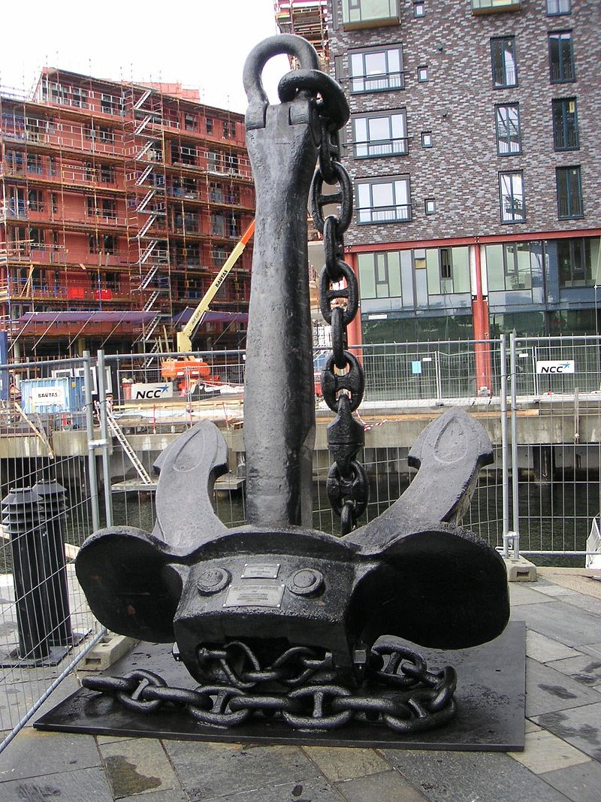

라이프치히로 가는 길 (6) - 트라헨베르크 의정서의 결함
게시: 2024-12-02T06:30:28+09:00
나폴레옹이 이렇게 어울리지 않는 우유부단함에 빠져 시간을 낭비하는 동안, 블뤼허는 트라헨베르크 의정서에 알고 보니 큰 결함이 있다는 것을 깨닫고 있었습니다. 그 취지에 따르면 연합군의 3개 방면군은 곰을 둘러싼 3마리의 사냥개처럼 어느 하나가 곰의 정면을 상대하는 동안 나머지 두 마리가 곰의 뒷다리를 물어 뜯어야 했습니다. 그러다 곰이 공격 방향을 휙 바꿔 뒷다리를 무는 사냥개를 공격하면, 그 사냥개는 재빨리 후퇴해야 했고요. 그런데, 지형지물로 인해 재빨리 후퇴를 못한다면 그 사냥개의 운명은 끝장나는 것이었습니다. 블뤼허는 자신의 슐레지엔 방면군의 신세가 바로 그 끝장난 운명의 사냥개와 같다는 것을 느꼈습니다. 바로 엘베강 때문이었습니다. 엘베강을 도강하여 이제 등 뒤에 강을 끼게 되면, 재빠른 후퇴란 불가능한 것이 되니까요.
(1813년 9월 말, 나폴레옹과 연합군의 3개 방면군 상황이 딱 이랬습니다.) 이제 자신을 상대하던 막도날의 보버 방면군이 드레스덴 바로 건너편 엘베 강변으로 완전히 후퇴했으므로, 블뤼허 자신은 꽤 제몫을 했다고 자부했습니다만, 그 다음엔 이제 어떻게 해야 하는지가 막막했던 것입니다. 블뤼허는 참모장 그나이제나우와 함께 상의한 끝에 엘베 강을 건너 서쪽으로 진격해야 한다고 결론을 내렸지만, 여전히 트라헨베르크의 결함, 즉 등 뒤에 엘베강을 둔 상태에서 어떻게 재빨리 후퇴하느냐는 문제에 대해서는 뭔가 대책이 있어야 했습니다. 그런 위험을 줄이기 위해, 블뤼허는 베르나도트의 북부 방면군과의 협동 작전을 통해 함께 엘베강을 도강한다는 계획을 세웠습니다. 아무래도 2개 방면군이 함께 움직이면 나폴레옹이 정면으로 쳐들어온다고 하더라도 수적 열세를 꽤 좁힐 수 있으니까요. 하지만 불안한 점은 여전했습니다. 일관성 있게 공격에 소극적인 베르나도트가 과연 블뤼허의 뜻에 따라 정말 제때에 엘베강을 건널지도 의심스러웠고, 또 베르나도트가 적극 협조한다고 해도, 아무래도 먼 거리에 걸쳐 떨어져 있는 베르나도트와의 협동 작전이 쉽지는 않을 것 같았기 때문입니다. 그런 문제를 해결하기 위해 일단 블뤼허가 할 수 있는 것은 엘베강 우안까지 바싹 후퇴한 막도날과 그 바로 너머의 드레스덴을 버려두고, 엘베강 하류로 이동하여 베르나도트와의 물리적 거리를 좁히는 것이었습니다. 그는 휘하 부대들에게 명령을 내려 곧 엘베강 하류, 그러니까 북쪽으로 이동할 것이니 이동 준비를 하라고 지시했습니다. 이 소식이 알려지자 슐레지엔 방면군 내부에서도 큰 저항이 일어났습니다. 부하들이 엘베강 하류로 이동하는 것에 대해 반대한 이유는 크게 2가지였습니다. 먼저, 자신들이 북쪽으로 방향을 틀어 이동해버리면, 자신들의 근거지인 슐레지엔이 무방비로 막도날에게 노출된다는 문제가 있었습니다. 그리고 그에 못지 않게 큰 반발은 역시나 트라헨베르크 의정서의 내재적인 결함과 상관 있는 것이었습니다. 트라헨베르크 의정서는 슐레지엔 방면군이 언제든 재빨리 후퇴할 수 있어야 한다는 것을 전제로 만들어진 것인데, 엘베강을 건너게 되면 그것이 불가능해진다는 것이었습니다. 확실히 많은 부하들은 블뤼허가 나폴레옹 및 프랑스에 대한 증오심이 너무 강하여 슐레지엔 방면군 전체를 지나친 위험에 노출시킨다고 불안해 했던 것입니다. 흔히 블뤼허에 대해, 그는 머리는 없고 그저 용기만 많은 일종의 허수아비 지휘관이며, 샤른호스트 및 그나이제나우가 블뤼허의 실질적인 두뇌 역할을 했다는 평가를 많이 합니다. 실제로 블뤼허를 프로이센군 최고 사령관 자리에 앉혀준 사람이 바로 샤른호스트였기 때문에 더욱 그런 평가를 받기 쉽습니다. 그러나 이때 프로이센 장교단의 강력한 반발을 잠재우고 이 엘베강 도하 작전을 강행할 수 있었던 것은 사령관이 바로 강렬한 카리스마와 불 같은 성격의 블뤼허이기 때문에 가능했던 것입니다. 가령 러시아군 병참부 소속의 테일(Dideric Jacob Teyl van Seraskerken)이라는 장군이 있었습니다. 이 사람은 원래 네덜란드 태생으로서 프랑스 혁명 이후 프랑스가 네덜란드를 침공하자 프로이센으로 이주하여 블뤼허와 개인적인 친구가 되었던 사람이었습니다. 테일은 바로 그런 인연 덕분에, 짜르 알렉산드르에 의해 블뤼허와 러시아 측 사이의 연락관 역할로 임명되어 슐레지엔 방면군에 배속되어 있었습니다. 테일은 엘베강 도하 계획을 듣자 친구인 블뤼허를 찾아가 이건 트라헨베르크 의정서 위반이며 짜르 및 프로이센 국왕이 블뤼허에게 부여한 권한을 뛰어넘는 월권 행위라고 탄원하며, 부디 블뤼허의 부하들인 프로이센 장교들을 불러 모아 의견을 들어보라고 설득하려 했습니다. 그러자 블뤼허는 평소 친했던 친구에게도 굳은 얼굴로 '자넨 연락관일 뿐 고문관도 아니며, 나는 부하들과 작전회의 따위는 열지 않는다네' 라며 자리를 박차고 일어났다고 합니다.

(1937년 진수된 Admiral Hipper급 독일 순양함 블뤼허(Blücher, 1만8천톤, 32노트)입니다. 분명히 프로이센군의 최고 사령관은 블뤼허였지만, 블뤼허의 이름은 이렇게 순양함에 사용되고 샤른호스트와 그나이제나우는 3만8천톤급 전함의 이름에 붙여진 것을 보더라도, 독일군에서 블뤼허와 그의 참모들에 대해 어떤 평가를 내리고 있는지 짐작할 수 있습니다.)

(결국 이 순양함 블뤼허는 그 이름의 주인과 성격까지 닮게 되었나 봅니다. 블뤼허는 1940년 나찌 독일의 노르웨이 침공 작전 때 대포로 무장된 노르웨이 해안 요새 앞으로 돌격했다가 많은 사상자를 내고 저렇게 격침되고 말았습니다.)

(순양함 블뤼허의 닻은 지금도 노르웨이 오슬로의 거리에 저렇게 전시가 되어 있습니다. 블뤼허의 두개골은 WW2 이후 그의 무덤을 파헤친 소련군이 축구공처럼 차고 놀았더니... 이래저래 고생이 많은 블뤼허입니다.) 실은 블뤼허와 그나이제나우도 움직일 수 밖에 없는 상황이었습니다. 가장 큰 이유는 자신들이 멈춰서 있으면 베르나도트는 진짜 현재 위치에 드러누워 버릴 것이 뻔하다는 것이었지만, 그에 못지 않게 중요한 이유는 식량이었습니다. 보버 방면군과 슐레지엔 방면군이 밀고 밀리며 두어 번씩 훑어 먹다보니 바우첸 일대의 식량이 바닥나 버렸던 것입니다. 슐레지엔에서 보내줄 수 있는 식량에도 한계가 있었으므로, 결국 슐레지엔 방면군도 어디론가 이동하여 현지 조달을 추구해야 하는 입장이었습니다. 게다가 슐레지엔을 무방비로 완전히 비워둔다는 비난에 대한 해답이 최근 폴란드로부터 도착하기도 했습니다. 바로 베니히센이 이끌고 온 폴란드 방면군이었습니다. 바로 이때 즈음 베니히센은 198문의 대포와 6만 병력으로 구성된 폴란드 방면군을 이끌고 슐레지엔과 보헤미아의 사이의 연결점인 지타우(Zittau)에 도착했습니다. 따라서 이들에게 보헤미아를 맡기고 슈바르첸베르크의 보헤미아 방면군이 켐니츠(Chemnitz)로 북진할 수 있게 되었습니다. 아무리 나폴레옹의 작전이 예측불가라고 해도, 20만에 가까운 보헤미아 방면군이 남쪽에서 밀고 올라오는데 저 먼 동쪽의 슐레지엔 침공을 시도하지는 않을 것이었습니다. 뿐만 아니라, 블뤼허도 슐레지엔을 완전히 비워두진 않았습니다. 그는 쉐르바토프(Shcherbatov)의 러시아군 제6 군단 약 1만 병력을 남겨두었습니다. 마침내 요크 장군의 생일인 9월 26일 새벽, 블뤼허는 바우첸에서 엘스터베르다(Elsterwerda)를 거쳐 엘스터(Elster)로 이르는 150km의 행군길에 나서기 시작했습니다. 하지만 여전히 가장 중요한 문제가 남아 있었습니다. 바로 엘베강을 등진 상태에서 어떻게 재빨리 후퇴할 수 있느냐 하는 것이었습니다. 그에 대해서는 그나이제나우가 매우 기묘한 작전안을 세워둔 것이 있었습니다.

(블뤼허의 슐레지엔 방면군의 여정을 표시한 지도입니다. 참고로 Elster는 까치란 뜻이자 인근의 강 이름인데, Elsterwerda란 무슨 뜻일까요? Werda라는 독일어 단어가 있지는 않지만, 고대 소르비 말에서 나온 저 werda라는 접미사는 '물의 주변'이라는 뜻이라고 합니다.)
Source : The Life of Napoleon Bonaparte, by William Milligan Sloane Napoleon and the Struggle for Germany, by Leggiere, Michael V With Napoleon's Guns by Colonel Jean-Nicolas-Auguste Noël https://www.britannica.com/event/Napoleonic-Wars/Dispositions-for-the-autumn-campaign http://www.historyofwar.org/articles/campaign_leipzig.html https://artmost.store/product-tag/oxota-na-medvedya/ https://en.wikipedia.org/wiki/German_cruiser_Bl%C3%BCcher